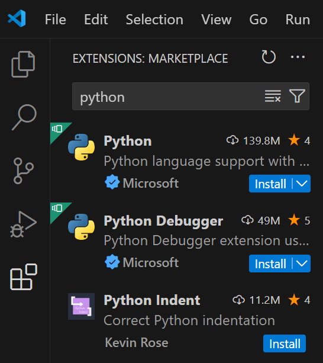
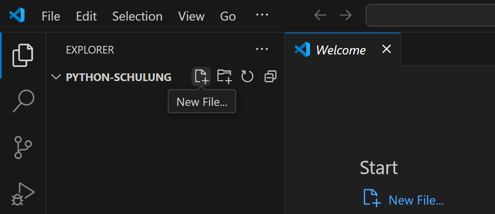
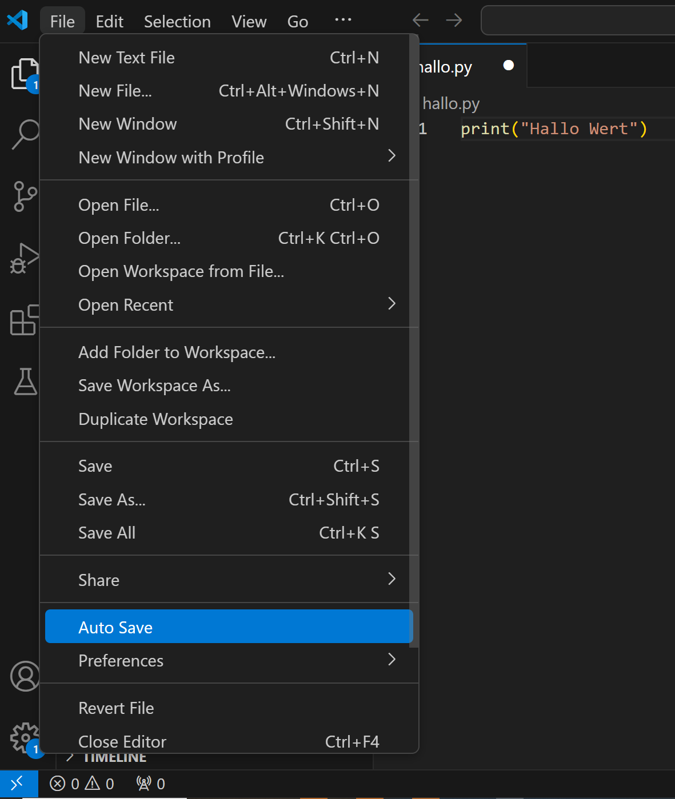
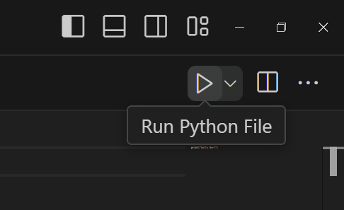

Installation¶
Video
Um mit dem Programmieren loslegen zu können müssen wir zunächst Python und eine Entwicklungsumgebung installieren:
-
Python
Um Pythonprogramme schreiben und ausführen zu können benötigen Sie das Programm Python auf dem Rechner. Dann können wir .py-Dateien schreiben und ausführen.
Installiere Python über Microsoft Store (1) oder python.org
- Suche nach "Store" in der Suchleiste, um den Microsoft Store auf deinem Rechner zu finden. Hier kannst du nach "Python 3.12" suchen und es installieren.
-
Entwicklungsumgebung
Um bequem Pythonprogramme zu schreiben Nutzen wir eine Entwicklungsumgebung. (1)
- Alle hier vorgeschlagenen Entwicklungsumgebungen sind gleichwertig. Wir werden hier mit Visual Studio Code arbeiten.
Microsoft Store (1) oder code.visualstudio.com
- Suche nach "Store" in der Suchleiste, um den Microsoft Store auf deinem Rechner zu finden. Hier kannst du nach "vscode" suchen und es installieren.
Starte Visual Studio Code und installiere dann die Erweiterung "Python". (1)
- 
jetbrains.com (1)
- Nutze den unteren Link zum Download der kostenfreien Community Edition (schwarz hinterlegt). Der obere Link ist eine 30-Tage-Testversion der Professional Edition.
Dein erstes Programm
Video
- Erstelle einen Leeren Ordner "python-schulung".
- Starte Visual Studio Code.
- Gehe auf "File" > "Open Folder" und wähle den von dir erstellten Ordner aus. (1)
- Bestätige, dass du dem Projekt vertraust. (5)
- Erstelle eine neue Python-Datei namens "hallo.py", indem du auf das neben dem Ordnernamen klickst. (2)
- Schreibe
print("Hallo Welt")in die Datei. - Aktiviere das automtische Speichern, indem du auf "File" > "Auto Save" klickst. (3)
- Klicke auf das die -Taste oben rechts, um die Datei auszuführen. (4)
- Ein Terminal öffnen sich unten und auf dieser erscheint die Ausgabe
Hallo Welt. 🎉🎉🎉


- Das Symbol taucht erst auf, wenn man mit der Maus darüber ist.🙄
 - 
- 

Strukturiert bleiben
Im folgenden werden Sie viele .py-Dateien erstellen. Sortieren sie diese mit Hilfe von Unterordnern, um nicht die Übersicht zu verlieren. So können Sie z.B. für jedes Seite hier im Browser einen eigenen Unterordner, mit dem Namen des Abschnitts.